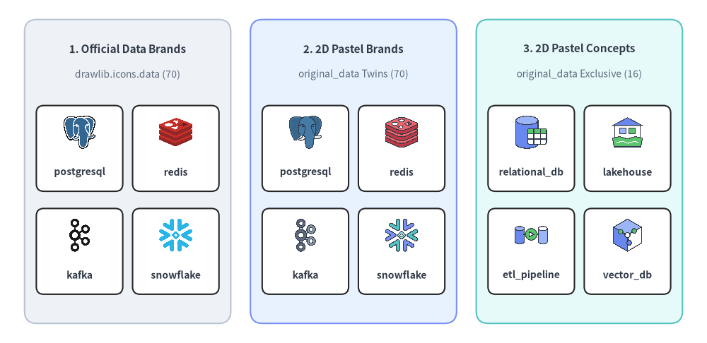
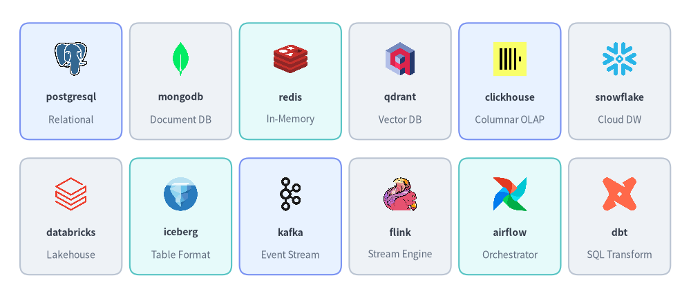
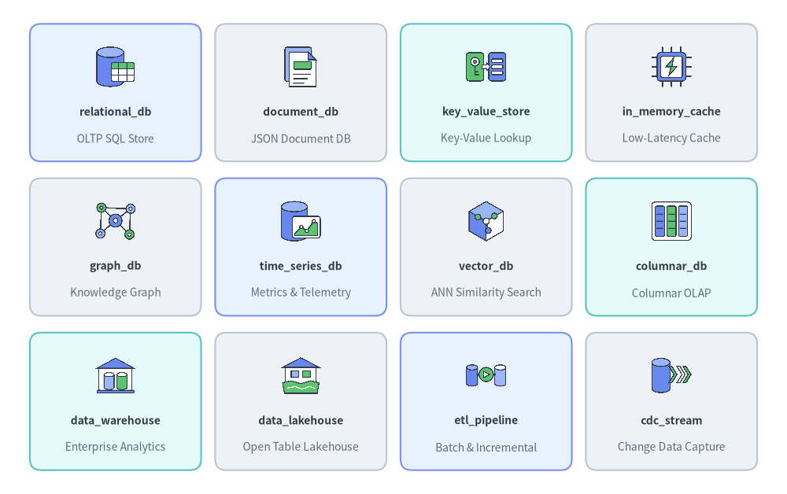
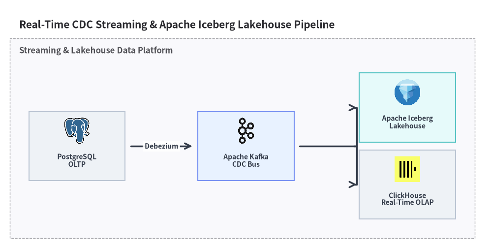

Data & Database Icons
Drawlib provides 70 official data & database brand icons in drawlib.icons.data (DataIcon) and 86 flat 2D pastel icons in drawlib.icons.original_data (OriginalDataIcon — 70 brand twins plus 16 vendor-neutral database & data architecture concept icons). See Icons Overview for cross-tier guidance and Architecture Diagrams for topology integration.

Source Code
from drawlib.canvas import save, setup
from drawlib.icons import data, original_data
from drawlib.shapes import rectangle
from drawlib.styles import Styles
from drawlib.text import text
setup(width=144, height=70)
columns = [
(
26.0,
"1. Official Data Brands",
"drawlib.icons.data (70)",
Styles.Neutral,
[
("postgresql", data.postgresql),
("redis", data.redis),
("kafka", data.kafka),
("snowflake", data.snowflake),
],
),
(
72.0,
"2. 2D Pastel Brands",
"original_data Twins (70)",
Styles.PrimaryNeutral,
[
("postgresql", original_data.postgresql),
("redis", original_data.redis),
("kafka", original_data.kafka),
("snowflake", original_data.snowflake),
],
),
(
118.0,
"3. 2D Pastel Concepts",
"original_data Exclusive (16)",
Styles.SecondaryNeutral,
[
("relational_db", original_data.relational_db),
("lakehouse", original_data.data_lakehouse),
("etl_pipeline", original_data.etl_pipeline),
("vector_db", original_data.vector_db),
],
),
]
for cx, title, subtitle, card_style, icons_list in columns:
rectangle((cx, 35.0), width=42.0, height=62.0, style=card_style.patch(shape_r=2.5))
text((cx, 60.0), title, style=Styles.DarkBold.patch(text_size=11.0))
text((cx, 54.8), subtitle, style=Styles.Muted.patch(text_size=10.0))
offsets = [(-9.8, 41.5), (9.8, 41.5), (-9.8, 20.5), (9.8, 20.5)]
sub_card_style = Styles.White.patch(shape_r=1.5, line_width=0.6)
for (dx, iy), (lbl, fn) in zip(offsets, icons_list, strict=True):
ix = cx + dx
rectangle((ix, iy - 1.8), width=17.6, height=17.5, style=sub_card_style)
fn((ix, iy + 1.5), width=7.5, style=Styles.Primary)
text((ix, iy - 6.6), lbl, style=Styles.DarkBold.patch(text_size=10.0))
save()
1. API Signature & Twin Module Structure
The Data & Database icon suite is organized as a twin module pair sharing a 1-to-1 canonical naming convention:
drawlib.icons.data(DataIconEnum): 70 official vendor and open-source brand icons (512×512RGBA PNGs) covering relational databases, NoSQL stores, vector databases, data warehouses, Apache lakehouse formats, streaming brokers, and ETL/BI platforms.drawlib.icons.original_data(OriginalDataIconEnum): 86 flat 2D pastel icons (512×512RGBA PNGs) comprising all 70 matching brand twins plus 16 vendor-neutral data architecture concept icons (relational_db,data_warehouse,data_lakehouse,etl_pipeline,cdc_stream, etc.).
from drawlib.diagrams.architecture import DataIcon, Node, OriginalDataIcon
from drawlib.icons import data, original_data
from drawlib.styles import Styles
# 1. Direct canvas rendering (center-anchored at (cx, cy), 1:1 square aspect ratio)
data.postgresql((30, 25), width=9.0, style=Styles.Primary)
original_data.postgresql((60, 25), width=9.0, style=Styles.Primary)
original_data.data_lakehouse((90, 25), width=9.0, style=Styles.Primary)
# 2. High-level ArchitectureDiagram / SequenceDiagram Enums
pg_node = Node("PostgreSQL Primary", width=25, height=18, icon=DataIcon.POSTGRESQL, icon_size=7.5)
dw_node = Node("Enterprise DW", width=25, height=18, icon=OriginalDataIcon.DATA_WAREHOUSE, icon_size=7.5)
| Aspect | Official Suite (drawlib.icons.data) |
Original 2D Pastel Suite (drawlib.icons.original_data) |
|---|---|---|
| Function Signature | data.<name>(xy, width, *, style, variant="default") |
original_data.<name>(xy, width, *, style, variant="default") |
| Diagram Enum | DataIcon.<NAME> (e.g., DataIcon.POSTGRESQL) |
OriginalDataIcon.<NAME> (e.g., OriginalDataIcon.DATA_WAREHOUSE) |
| Canonical Count | 70 brand icons | 86 total (70 brand twins + 16 concept icons) |
| Coordinate Anchor | Center (cx, cy) (halign="center", valign="center") |
Center (cx, cy) (halign="center", valign="center") |
| Asset Archive | icon_data (512×512 RGBA PNG) |
icon_original_data (512×512 RGBA PNG) |
2. Official & Pastel Brand Icons Showcase & Complete Reference (data & original_data)
All 70 brand icon names listed below exist identically in both drawlib.icons.data (official logos) and drawlib.icons.original_data (matching 2D pastel brand twins):

Source Code
from drawlib.canvas import save, setup
from drawlib.icons import data
from drawlib.shapes import rectangle
from drawlib.styles import Styles
from drawlib.text import text
setup(width=148, height=64)
row1 = [
("postgresql", "Relational", data.postgresql, Styles.PrimaryNeutral),
("mongodb", "Document DB", data.mongodb, Styles.Neutral),
("redis", "In-Memory", data.redis, Styles.SecondaryNeutral),
("qdrant", "Vector DB", data.qdrant, Styles.Neutral),
("clickhouse", "Columnar OLAP", data.clickhouse, Styles.PrimaryNeutral),
("snowflake", "Cloud DW", data.snowflake, Styles.Neutral),
]
row2 = [
("databricks", "Lakehouse", data.databricks, Styles.Neutral),
("iceberg", "Table Format", data.iceberg, Styles.SecondaryNeutral),
("kafka", "Event Stream", data.kafka, Styles.PrimaryNeutral),
("flink", "Stream Engine", data.flink, Styles.Neutral),
("airflow", "Orchestrator", data.airflow, Styles.SecondaryNeutral),
("dbt", "SQL Transform", data.dbt, Styles.Neutral),
]
for row_idx, items in enumerate([row1, row2]):
cy = 46.5 if row_idx == 0 else 17.5
for col_idx, (name, cat, icon_fn, card_st) in enumerate(items):
cx = 15.2 + col_idx * 23.5
rectangle((cx, cy), width=21.8, height=25.0, style=card_st.patch(shape_r=2))
icon_fn((cx, cy + 4.8), width=8.0, style=Styles.Primary)
text((cx, cy - 3.4), name, style=Styles.DarkBold.patch(text_size=10.0))
text((cx, cy - 8.2), cat, style=Styles.Muted.patch(text_size=10.0))
save()
2.1. Complete 70 Shared Brand Icons (data.<name> & original_data.<name>)
| Category | Count | Canonical Function Names (data.<name> & original_data.<name>) |
|---|---|---|
| Relational, Distributed SQL & Serverless DBs | 13 | cockroachdb, mariadb, mysql, neon, oracle_db, planetscale, postgresql, sql_server, sqlite, supabase, tidb, turso, yugabytedb |
| NoSQL, Document, Wide-Column, Graph & Time-Series | 10 | cassandra, couchbase, influxdb, memcached, mongodb, neo4j, redis, scylladb, timescaledb, valkey |
| Vector Databases & Search Engines | 9 | chromadb, elasticsearch, lancedb, meilisearch, milvus, opensearch, pgvector, qdrant, weaviate |
| Cloud Data Warehouses, OLAP & Lakehouse Formats | 15 | arrow, clickhouse, databricks, delta_lake, doris, druid, duckdb, hadoop, hudi, iceberg, minio, parquet, snowflake, starrocks, trino |
| Streaming, Event Brokers & CDC Engines | 9 | beam, debezium, flink, kafka, nats, pulsar, rabbitmq, redpanda, spark |
| Data Integration, Orchestration, Catalog & BI | 14 | airbyte, airflow, dagster, datahub, dbt, fivetran, marimo, metabase, nifi, openmetadata, polars, prefect, redash, superset |
3. Vendor-Neutral Concept Icons Showcase & Complete Reference (original_data)
In addition to the 70 brand twins, drawlib.icons.original_data (OriginalDataIcon) provides 16 exclusive vendor-neutral database and data platform concept icons for illustrating logical data architectures, storage engines, and ETL/CDC pipelines:

Source Code
from drawlib.canvas import save, setup
from drawlib.icons import original_data
from drawlib.shapes import rectangle
from drawlib.styles import Styles
from drawlib.text import text
setup(width=140, height=88)
rows = [
[
("relational_db", "OLTP SQL Store", original_data.relational_db, Styles.PrimaryNeutral),
("document_db", "JSON Document DB", original_data.document_db, Styles.Neutral),
("key_value_store", "Key-Value Lookup", original_data.key_value_store, Styles.SecondaryNeutral),
("in_memory_cache", "Low-Latency Cache", original_data.in_memory_cache, Styles.Neutral),
],
[
("graph_db", "Knowledge Graph", original_data.graph_db, Styles.Neutral),
("time_series_db", "Metrics & Telemetry", original_data.time_series_db, Styles.PrimaryNeutral),
("vector_db", "ANN Similarity Search", original_data.vector_db, Styles.Neutral),
("columnar_db", "Columnar OLAP", original_data.columnar_db, Styles.SecondaryNeutral),
],
[
("data_warehouse", "Enterprise Analytics", original_data.data_warehouse, Styles.SecondaryNeutral),
("data_lakehouse", "Open Table Lakehouse", original_data.data_lakehouse, Styles.Neutral),
("etl_pipeline", "Batch & Incremental", original_data.etl_pipeline, Styles.PrimaryNeutral),
("cdc_stream", "Change Data Capture", original_data.cdc_stream, Styles.Neutral),
],
]
for row_idx, items in enumerate(rows):
cy = 71.5 - row_idx * 27.5
for col_idx, (title, sub, icon_fn, card_st) in enumerate(items):
cx = 20.5 + col_idx * 33.0
rectangle((cx, cy), width=30.5, height=24.5, style=card_st.patch(shape_r=2))
icon_fn((cx, cy + 4.6), width=8.0, style=Styles.Primary)
text((cx, cy - 3.4), title, style=Styles.DarkBold.patch(text_size=10.0))
text((cx, cy - 8.2), sub, style=Styles.Muted.patch(text_size=10.0))
save()
3.1. Complete 16 Vendor-Neutral Concept Icons (original_data.<name>)
Canonical Function (original_data.*) |
OriginalDataIcon Enum Member |
Architectural Role |
|---|---|---|
cdc_stream |
OriginalDataIcon.CDC_STREAM |
Change Data Capture (CDC) log tailing and real-time replication stream |
columnar_db |
OriginalDataIcon.COLUMNAR_DB |
Column-oriented analytical database engine (OLAP) |
data_catalog |
OriginalDataIcon.DATA_CATALOG |
Enterprise metadata governance, schema discovery, and lineage catalog |
data_lakehouse |
OriginalDataIcon.DATA_LAKEHOUSE |
Unified open table format lakehouse combining object storage and ACID SQL |
data_warehouse |
OriginalDataIcon.DATA_WAREHOUSE |
Centralized enterprise analytical data warehouse |
document_db |
OriginalDataIcon.DOCUMENT_DB |
Schema-flexible JSON/BSON document database |
etl_pipeline |
OriginalDataIcon.ETL_PIPELINE |
Extract-Transform-Load (ETL / ELT) batch and incremental data pipeline |
graph_db |
OriginalDataIcon.GRAPH_DB |
Property graph or RDF knowledge graph database |
in_memory_cache |
OriginalDataIcon.IN_MEMORY_CACHE |
Sub-millisecond in-memory caching tier |
key_value_store |
OriginalDataIcon.KEY_VALUE_STORE |
Distributed key-value lookup and session storage engine |
message_broker |
OriginalDataIcon.MESSAGE_BROKER |
Asynchronous pub/sub event bus and message queue broker |
nosql_db |
OriginalDataIcon.NOSQL_DB |
Partitioned non-relational wide-column or distributed NoSQL store |
object_storage |
OriginalDataIcon.OBJECT_STORAGE |
Durable blob and parquet object storage bucket |
relational_db |
OriginalDataIcon.RELATIONAL_DB |
ACID-compliant relational SQL transactional database (OLTP) |
time_series_db |
OriginalDataIcon.TIME_SERIES_DB |
High-ingest telemetry, metrics, and IoT time-series database |
vector_db |
OriginalDataIcon.VECTOR_DB |
High-dimensional vector similarity search database |
4. Practical Architecture Diagram (DataIcon & OriginalDataIcon)
The example below illustrates a real-time CDC and Lakehouse analytics pipeline combining official DataIcon logos (PostgreSQL, Kafka, Iceberg, ClickHouse) inside an ArchitectureDiagram:
from drawlib.canvas import clear, save, setup
from drawlib.diagrams.architecture import (
ArchitectureDiagram,
DataIcon,
Node,
NodeGroup,
)
from drawlib.styles import Styles
clear()
setup(width=128, height=64)
d = ArchitectureDiagram(
node_style=Styles.Primary,
node_text_style=Styles.DarkBold.patch(text_size=10.0),
edge_style=Styles.DarkBold,
edge_text_style=Styles.DarkBold.patch(text_size=10.0),
node_card_style=Styles.Neutral,
title="Real-Time CDC Streaming & Apache Iceberg Lakehouse Pipeline",
)
platform = d.add(NodeGroup(title="Streaming & Lakehouse Data Platform", padding=5.0), xy=(4.0, 4.0))
oltp = platform.add(
Node(
"PostgreSQL\nOLTP",
width=25,
height=18,
icon=DataIcon.POSTGRESQL,
icon_size=7.5,
),
xy=(12.0, 18.0),
)
kafka_node = platform.add(
Node(
"Apache Kafka\nCDC Bus",
width=25,
height=18,
icon=DataIcon.KAFKA,
icon_size=7.5,
card_style=Styles.PrimaryNeutral,
),
xy=(56.0, 18.0),
)
iceberg_node = platform.add(
Node(
"Apache Iceberg\nLakehouse",
width=25,
height=18,
icon=DataIcon.ICEBERG,
icon_size=7.5,
card_style=Styles.SecondaryNeutral,
),
xy=(98.0, 28.0),
)
ch_node = platform.add(
Node(
"ClickHouse\nReal-Time OLAP",
width=25,
height=18,
icon=DataIcon.CLICKHOUSE,
icon_size=7.5,
),
xy=(98.0, 8.0),
)
d.connect(oltp, kafka_node, label="Debezium", padding=1.5)
kafka_node.fork([iceberg_node, ch_node], at_x=88.0, padding=1.5)
d.draw(xy=(4.0, 4.0))
save()
